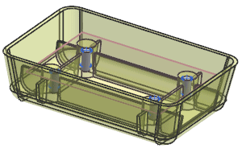
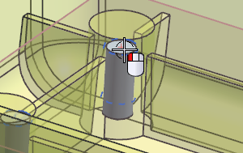
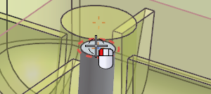
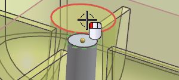
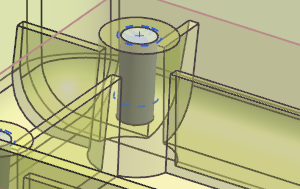
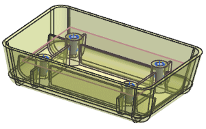

Move the holes to the required locations
-
In the Part Navigator, right-click Extrude (4), and choose Show.

-
On the Standard toolbar, click Move Object
 .
.
-
Select the point that was used to locate one of the positive holes.

-
From the Motion list, select Point to Point.
-
With Specify From Point active, select the arc center of the top of the threaded hole.

-
With Specify to Point active, select the arc center of the top of the boss.

-
Click Apply.

-
Repeat steps 5 through 7 for the remaining 3 holes.

-
Click Cancel.